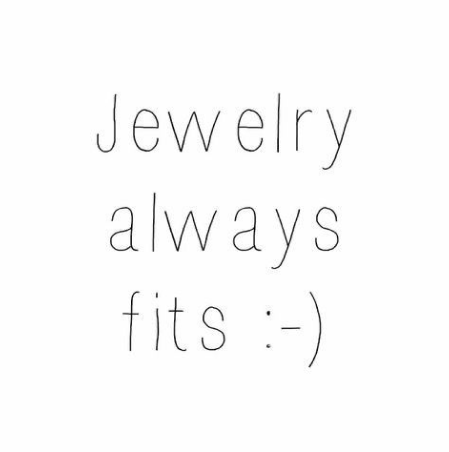
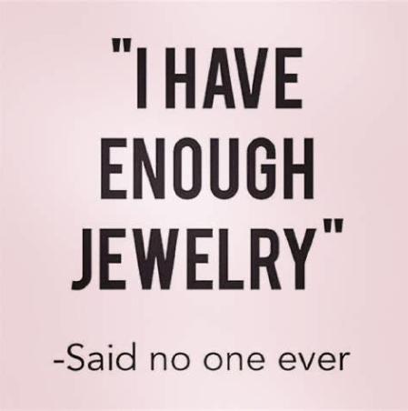
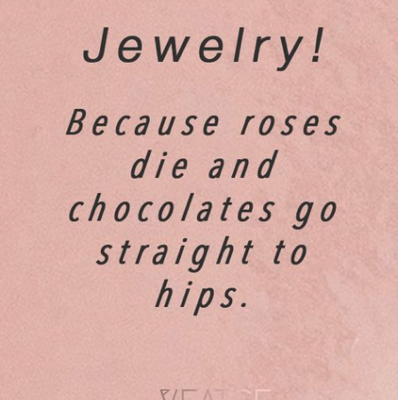

¿Por qué comprar joyería?



¿Por qué comprar en Joyería Salerno?
Comprar en una joyería antigua de buena calidad, con una larga trayectoria en el negocio, es una experiencia única llena de valor y significado. Estos negocios han perdurado a lo largo del tiempo por su reputación, excelencia en la artesanía y compromiso con la calidad. Al elegir una joyería con una historia sólida, no solo adquieres piezas de alta calidad, sino que también te beneficias de: